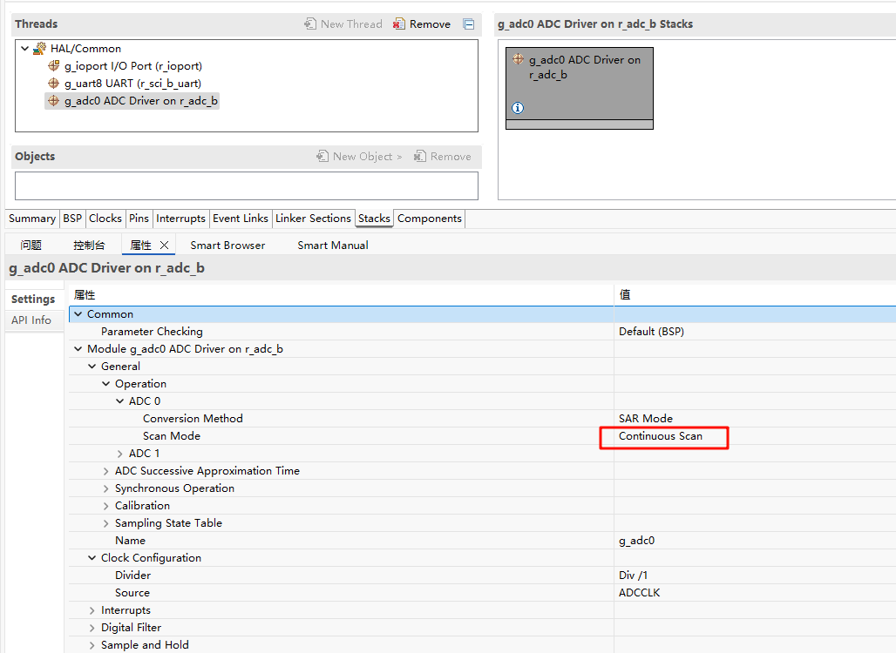
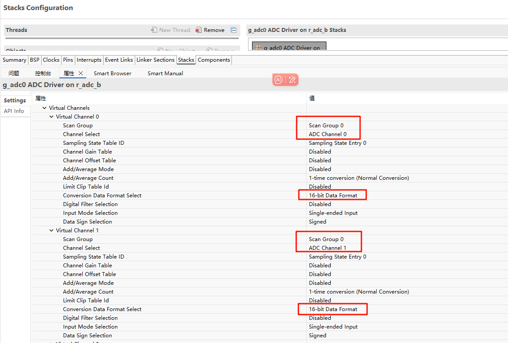
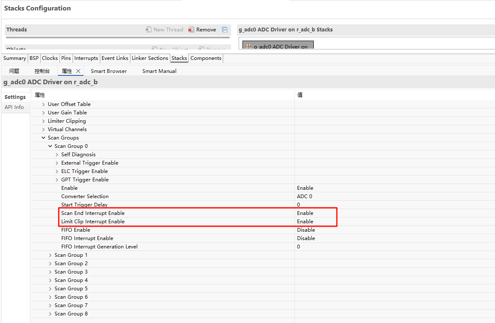
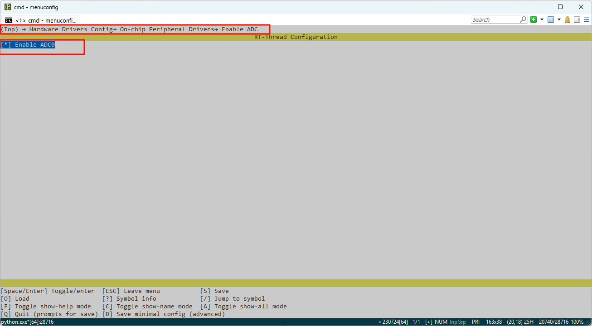
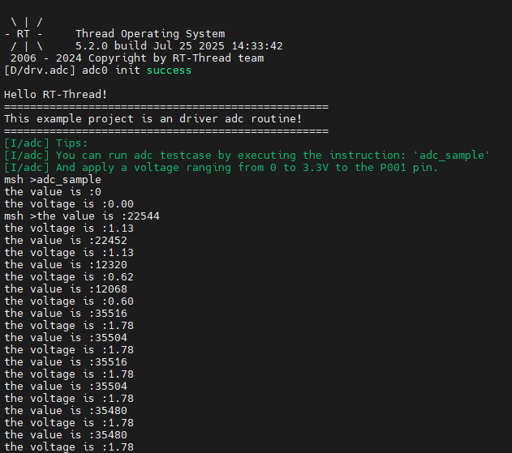

RA8P1 Titan Board ADC Application Example Usage Instructions
English | Chinese
Introduction
This example demonstrates how to use the RT-Thread ADC framework on the Titan Board to collect analog signals via ADC and perform digital signal conversion. The main content includes the following:
Hardware Description

As shown in the above schematic diagram, there are four ADC channel interfaces left on the Titan Board that are connected to the channels 0, 1, 2, and 3 of the MCU adc0 respectively.
FSP Configuration Instructions
Step 1: Open FSP and import the XML configuration file (or directly click the FSP link file in RT-Thread Studio).
Step 2: Create a new
r_adcstack, configure the ADC device, and select the channels to be used.



Step 3: Save and click “Generate Project”. The generated code will be saved in
hal_data.c.
ENV Configuration
Use the env tool to enable ADC0 peripheral:

Example Code Description
The ADC source code is located in /projects/Titan_driver_adc/src/hal_entry.c. The macros used are defined as follows:

The specific function is to sample the analog voltage from ADC0 channel 1 every 1000ms and perform a conversion. The code is as follows:
static int adc_vol_sample()
{
rt_adc_device_t adc_dev;
rt_uint32_t value, vol;
rt_err_t ret = RT_EOK;
adc_dev = (rt_adc_device_t)rt_device_find(ADC_DEV_NAME);
if (adc_dev == RT_NULL)
{
rt_kprintf("adc sample run failed! can't find %s device!\n", ADC_DEV_NAME);
return RT_ERROR;
}
ret = rt_adc_enable(adc_dev, ADC_DEV_CHANNEL);
while(1)
{
value = rt_adc_read(adc_dev, ADC_DEV_CHANNEL);
rt_kprintf("the value is :%d \n", value);
vol = value * REFER_VOLTAGE / CONVERT_BITS;
rt_kprintf("the voltage is :%d.%02d \n", vol / 100, vol % 100);
rt_thread_mdelay(1000);
}
ret = rt_adc_disable(adc_dev, ADC_DEV_CHANNEL);
return ret;
}
In the example, the while loop calls adc_vol_sample every 1000ms.
Compilation & Download
RT-Thread Studio: In RT-Thread Studio’s package manager, download the Titan Board resource package, create a new project, and compile it.
After compilation, connect the development board’s JLink interface to the PC and download the firmware to the development board.
Run Effect
The effect when using ADC0 channel 1 to sample a 1.8V voltage is shown below:
